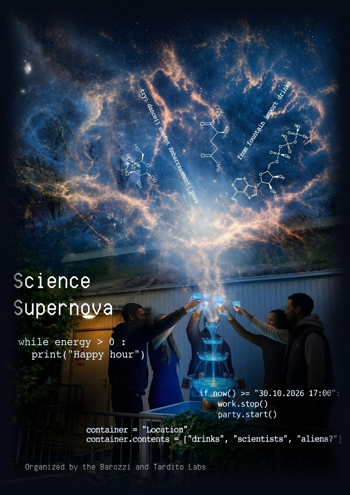

The Barozzi and Tardito labs invite you to our Happy hour!
Friday, 30 October 2026 · 17:00 Vienna time · CCR container
Please RSVP by Monday, 26 October so we can buy enough drinks.
RSVPCome as you are or come as you aren't. Casual earthling, full extraterrestrial, or something in between - all life forms welcome.
